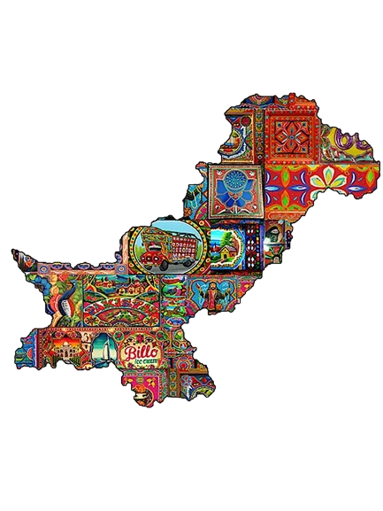
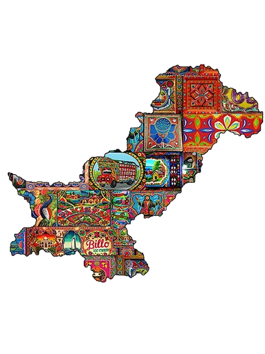

Truck art isn’t just decoration. It carries the weight of Pakistan’s plural identity and turns the road into a painting gallery. Pakistan holds many cultures, and that mix shows up on every panel: handmade work, rich with folktales, blessings, and patterned borders. These rolling canvases help people communicate across regions: a driver’s roots, beliefs, and tastes are visible at a glance.
Clothing in Pakistan is a story stitched by hand. Zardozi, ajrak, and phulkari carry centuries of tradition, weaving culture, identity, and heritage into every thread. Patterns tell tales of regions, beliefs, and family histories, while colors speak louder than words. Each piece transforms the wearer into a walking canvas, connecting past and present with elegance and pride.
From the soulful qawwalis of shrines to folk songs by village fires, from classical ragas to rap battles in the streets, every note carries culture, emotion, and memory. Music connects people across regions, preserving traditions while embracing change, turning sound into a canvas that speaks louder than words.